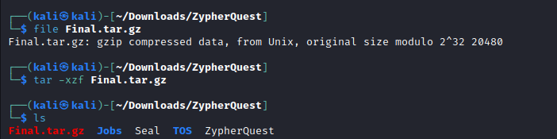
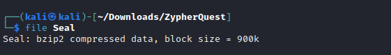
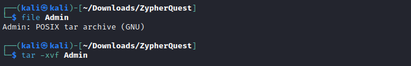
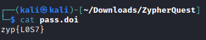

Level 10 - Zypher Quest 1
Challenge
You are given a file ZypherQuest
Solution
As the file don’t have any extension, we can use file command to check the file type

You can see it is a zip file. Now use unzip to extract the file

You can see the extracted file is a gzip file which is archived using tar. You can see 3 new files have been extracted.


You may want to read the following files but skipping that, we check the file type for Seal.

The given file is a bzip2 compressed data. To unzip the file, we can firstly rename the file to add .bz2 extension and proceed to unzip it using bzip2. This gives us a tar file which can be further extracted using tar.
1
2
3
mv Seal Seal.bz2
bzip2 -d Seal.bz2
tar -xvf Seal
Instead of these 3 steps we can directly uncompressed the given data “Seal” using tar -xjf command.

We can see new files have been uncompressed. We also see a file named Start.sh which is a script file. We can try running this using ./Start.sh. Running it essentially does nothing but delete old files cluttering the screen if they weren’t already deleted. We can try and read some files to try and get some clues. Here the file Admin looks interesting. Checking its file type, we see it is another tar file.


Extracting it gives us a file name Z0d1aCisWatching. We again check the file type and try decompressing it.


Further checking the decompressed file (data in this case) We see a tar file again. Decompressing it gives an interesting file.

Checking its file type shows there are no permissions assigned to the given file. So, we used chmod 444 or chmod +r to make the file readable.

Flag
zyp{L0S7}